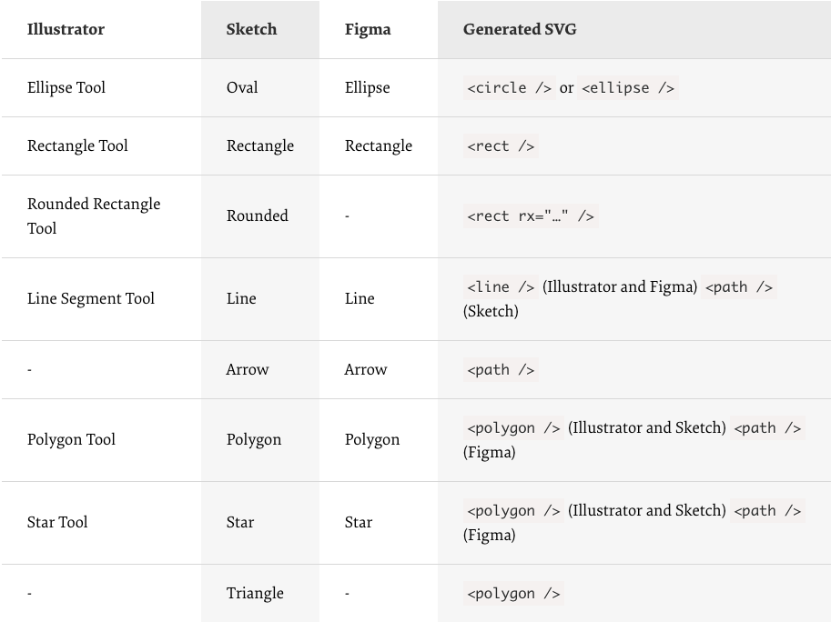
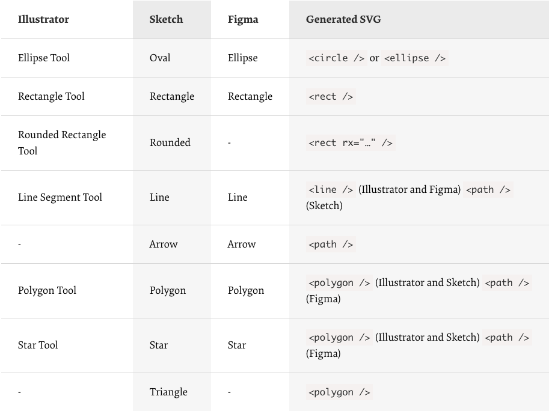

IV. Mobile and Desktop Design
What I've Learned About Mobile/Desktop Design:
In the article Desktop vs. mobile app design: how to optimize your user experience by Matt Ellis, he writes about going mobile-first is a better way of designing a web page because it is easier to add content than it is to remove content on a screen. Additionally, it is best to have sites that are similar on BOTH platforms. From this article I've learned to prioritize elements and making sure key information is being displayed.
Next, in
A Practical Guide To SVG And Design Tools
by Mikołaj Dobrucki, Dobrucki writes about making SVG - scalable vector graphics in HTML and CSS. He goes through
how to make different shapes and designs using (x,y) coordinates. Using this new found knowledge I
plan on implementing vector graphic shapes on to the background of my main blog page. He also talks about using fill strokes and
combining text and box shadows to enhance the depth of the shapes you make.
 Dobrucki also shows how you can export basic shapes from programs such as
Adobe Illustrator, Sketch, and Figma and the generated SVG code that it
creates to build the shapes.

Dobrucki also shows how you can export basic shapes from programs such as
Adobe Illustrator, Sketch, and Figma and the generated SVG code that it
creates to build the shapes.

My Web Usage:
When browsing the internet I often find myself going to my computer instead of my phone. Although this is the day and age of going mobile, I prefer using my computer over my phone. The only time I use my phone for the internet is when I don't have my laptop with me. I think phone browsers are a lot harder to use than desktop browsers because they aren't fully optimized for use yet. The only time desktop sites are really well built for mobile is when they have a dedicated application for it such as Amazon or eBay. instead of relying on mobile sites.